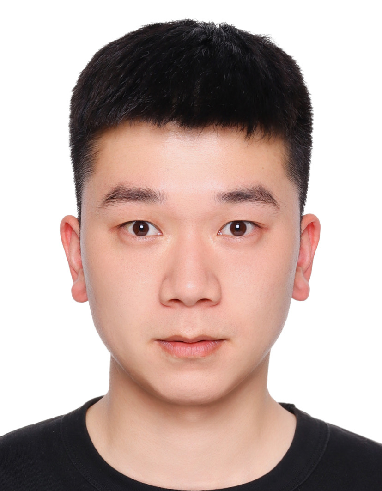

Hong LiI am a third-year master's student of Engineering in Computer Science at ShanghaiTech University , advised by Yi Zhou and Yunji Chen . I have got Bachelor's degree from Jilin University in 2021, where I major in Electronic Information Engineering. My major research directions including Multimodal Learning and Continual Learning. Email / Resume / Github / Google Scholar / Semantics Scholar |
 |
Main Collaborator
Xingyu Li
|
ResearchI am currently engaged in extensive research on multi-modal underlying theories, focusing on various aspects such as multi-modal information utilization, multi-modal dynamics, and object perception understanding. Additionally, I am actively involved in exploring multi-modal continual learning. |

| >
Boosting Multi-modal Model Performance with Adaptive Gradient ModulationHong Li * , Xingyu Li * , Pengbo Hu, Yinuo Lei, Chunxiao Li, Yi Zhou ICCV,2023 arXiv / code In this work, we propose an Adaptive Gradient Modulation (AGM) method that can boost the performance of multi-modal models with various fusion strategies. Additionally, we introduce a novel metric to measure the competition strength that understands the mechanism of modulation methods. | >

| >
Tree-of-Mixed-Thought: Combining Fast and Slow Thinking for Multi-hop Visual ReasoningPengbo Hu * , Ji Qi * , Xingyu Li, Hong Li , Xinqi Wang, Bing Quan, Ruiyu Wang, Yi Zhou arXiv 2023 In this work, we propose a hierarchical plan-searching algorithm that integrates the one-stop reasoning (fast) and the Tree-of-thought (slow). Moreover, we repurpose the PTR and the CLEVER datasets, developing a systematic framework for evaluating the performance and efficiency of LLMs-based plan-search algorithms under reasoning tasks at different levels of difficulty. | >